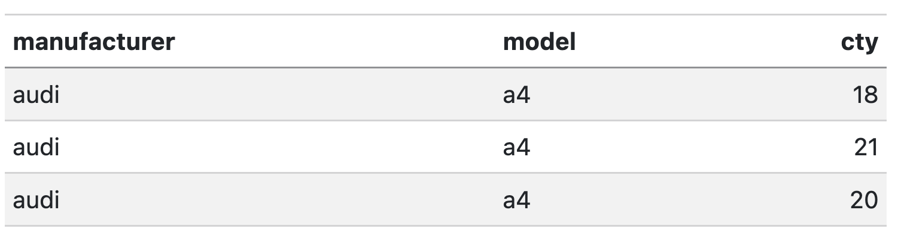
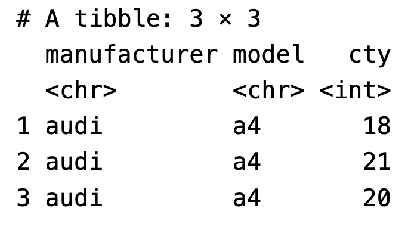
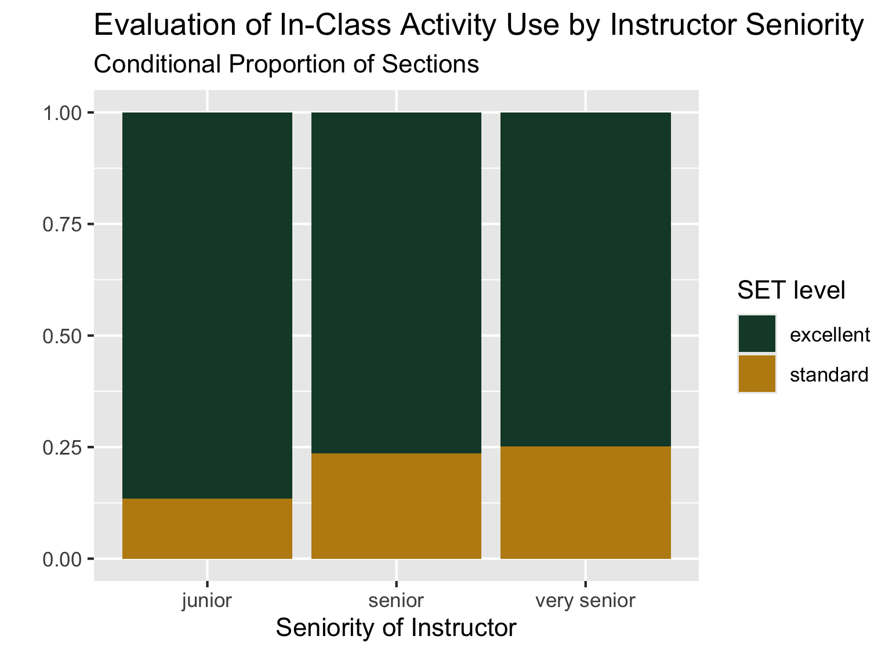

# code chunk for loading packagesLab 3: Student Evaluations of Teaching
In this lab, we will be using the dplyr package to explore student evaluations of teaching data. You are expected to use functions from dplyr to do your data manipulation!
Important
When showing rows of a data frame as a solution to a problem, use the kable() function from the knitr package to nicely format the data in your final rendered report. This means I want to see things like this:

Not this:

See the class slides for examples.
You can check out the kableExtra package if you want to further format any tables, but that is not necessary for this lab.
Warning
Save both your .qmd file and your dataset in the same folder within your Stat 331 directory! DO NOT open the .qmd file straight from your downloads folder.
Tip
- The first chunk of your Quarto document should be to declare your libraries.
- The second chunk of your Quarto document should be to load in your data.
- Make sure you address all the questions in these instructions.
- If a question requires any type of calculation, you should provide code for your answer!
- I have provided some hints about functions that might be useful to you. You are not required to use these functions.
- You may have to Google to solve some of these!
- Be sure to save your work regularly.
- Be sure to render your file every so often, to check for errors and make sure it looks nice.
- Make sure your Quarto document does not contain
View(dataset)orinstall.packages("package"), both of these will prevent rendering. - Check your Quarto document for occasions when you looked at the data by typing the name of the data frame. Leaving these in means the whole dataset will print out and this looks unprofessional. Remove these!
- If all else fails, you can set your execution options to
error: true, which will allow the file to render even if errors are present.
- Make sure your Quarto document does not contain
The Data
The teacher_evals dataset contains student evaluations of teaching (SET) collected from students at a university in Poland. There are SET surveys from students in all fields and all levels of study offered by the university.
The SET questionnaire that students at this university complete is as follows:
Evaluation survey of the teaching staff of [university name].
Please complete the following evaluation form, which aims to assess the lecturer’s performance. Only one answer should be indicated for each question. The answers are coded in the following way: 5 - I strongly agree; 4 - I agree; 3 - Neutral; 2 - I don’t agree; 1 - I strongly don’t agree.
Question 1: I learnt a lot during the course.
Question 2: I think that the knowledge acquired during the course is very useful.
Question 3: The professor used activities to make the class more engaging.
Question 4: If it was possible, I would enroll for a course conducted by this lecturer again.
Question 5: The classes started on time.
Question 6: The lecturer always used time efficiently.
Question 7: The lecturer delivered the class content in an understandable and efficient way.
Question 8: The lecturer was available when we had doubts.
Question 9. The lecturer treated all students equally regardless of their race, background and ethnicity.
These data are from the end of the winter semester of the 2020-2021 academic year. In the period of data collection, all university classes were entirely online amid the Covid-19 pandemic. While expected learning outcomes were not changed, the online mode of study could have affected grading policies and could have implications for the data.
Average SET scores were combined with many other variables, including:
- characteristics of the teacher (degree, seniority, gender, SET scores in the past 6 semesters).
- characteristics of the course (time of day, day of the week, course type, course breadth, class duration, class size).
- percentage of students providing SET feedback.
- course grades (mean, standard deviation, percentage failed for the current course and previous 6 semesters).
This rich dataset allows us to investigate many of the biases in student evaluations of teaching that have been reported in the literature and to formulate new hypotheses.
Before tackling the problems below, study the description of each variable in the data dictionary here. You wil want to have this open and refer back to it!
Citation: journal, Under blind review in refereed. University SET data, with faculty and courses characteristics. Ann Arbor, MI: Inter-university Consortium for Political and Social Research [distributor], 2021-09-12. https://doi.org/10.3886/E149801V1
1. Load the appropriate R packages and the teacher_evals data.
# code chunk for importing the dataData Inspection + Summary
2. Provide a brief overview (~4 sentences) of the dataset.
Note
It is always good practice to start an analysis by getting a feel for the data and providing a quick summary for readers. You do not need to show any code for this question, although you probably want to use code to get some information about the data(e.g., summary(data), glimpse(data), dim(data), etc.). Things to think about – where did the data come from? what sort of data are provided (context and data type)? how much data do you have? etc.
# you may want to use code to answer this question3. What is the unit of observation (i.e. a single row in the dataset) identified by?
Warning
It is not one instructor per row! It’s also not just one class per row!
# you may want to use code to answer this question4. Use one dplyr pipeline to clean the data by
- renaming the
gendervariablesex, - removing all courses with fewer than 10 students (participants),
- The
question_novariable refers to the questions 1-9 in the survey, but weirdly takes the values 901-909. Updatequestion_noso that it takes the values 1-9. - changing data types in whichever way you see fit (e.g., is the instructor ID really a numeric data type?), and
- only keeping the columns we will use –
course_id,teacher_id,question_no,no_participants,resp_share,SET_score_avg,percent_failed_cur,academic_degree,seniority, andsex.
Assign your cleaned data to a new variable named teacher_evals_clean – use this data going forward.
Tip
The steps that I mention are not necessarily in the most efficient order.
# code chunk for Q4For the remaining questions in this section (Q5 - Q8), answer the question with at least one sentence and include any code output that you used to answer the question.
5. How many unique instructors and unique courses are present in the cleaned dataset?
Tip
Helpful functions: summarize(), n_distinct()
# code chunk for Q56. One teacher-course combination has some missing values, coded as NA. Which instructor has these missing values? Which couse? What variable are the missing values in? Your code output should clearly answer this question.
Tip
Helpful functions: if_any()
# code chunk for Q67. What are the demographics of the instructors in this study? Investigate the variables academic_degree, seniority, and sex and summarize your findings in ~3 complete sentences.
Tip
You’ll need to first manipulate your data to have each instructor represented only once.
You do not need to do this in only one line of code or pipeline. Explore the data!
Helpful functions: distinct(___, .keep_all = TRUE)
# code chunk for Q78. Each course seems to have used a different subset of the 9 evaluation questions. How many teacher-course combinations asked all 9 questions? Your output should be a single number to answer the question.
# code chunk for Q8Rate my Professor
For the questions in this section (9 - 11), you don’t need to write up any answers – you only need to show the output of your code (nicely formatted with kable()) to respond to each. Your code output should clearly show the answer.
Tip
Helpful functions: slice_max(), slice_min()
9. Which instructor(s) had the lowest average rating for Question 1 (“I learnt a lot during the course.”) across all their courses (i.e. you should be looking at the mean of the SET_score_avg variable across courses for each instructor)? Include the number of courses the instructor(s) taught in your output
a. Sketch a game plan and include the image below.
b. Implement/code your game plan
# code chunk for Q910. Which instructor(s), who had at least five courses reviewed in the data, had the highest average rating for Question 1 (I learnt a lot during the course.) across all their courses?
# code chunk for Q1011. Which instructor(s) with either a doctorate or professor degree had the highest and lowest average percent of students responding to the evaluation across all their courses? Include how many years the instructor had worked (seniority) and their sex in your output. You can use two pipelines to answer these questions.
Tip
Thinking about how to include the seniority and sex of the instructor in your output may be tricky!! There are a couple of ways to approach this. One hint is to think about how many distinct seniority levels / sexes there are for each instructor.
# code chunk for Q11Chi-Square Test of Independence
Refresher on Chi-square test of independence
While a second course in statistics is a pre-requisite for this class, here is a refresher on Chi-square tests of independence.
Let’s compare the level of SET ratings for Question 3 (The professor used activities to make the class more engaging.) between senior instructors and junior instructors.
12. Create a new dataset teacher_evals_compare that accomplishes the following with one dplyr pipeline:
- includes responses for Question 3 only,
- creates a new variable called
set_levelthat is “excellent” if theSET_score_avgis 4 or higher (inclusive) and “standard” otherwise, - creates a new variable called
sen_levelthat is “junior” if the instructor has been teaching for 4 years or less (inclusive), “senior” if between 5-8 years (inclusive), and “very senior” if more than 8 years - contains only the variables we are interested in –
course_id,set_level, andsen_level.
Tip
Helpful functions: if_else(), case_when()
# code chunk for Q1213. Using the new dataset and your ggplot2 skills, recreate the filled bar plot shown below.

Tip
Note that getting the general structure and reader friendly labels is good enough. I used Cal Poly’s branded colors for fun, which use HEX codes #BD8B13 and #154734.
# code chunk for Q1314. Use chisq.test() to carry out a chi-square test of independence between the SET level and instructor seniority level in your new dataset. You will want to look at the documentation and maybe Google a bit!
Tip
Note that the chisq.test() function does not take a formula / data specification as we have seen before. You will either have to use with() or indicate the variables of interest using $ syntax.
# code chunk for Q1415. Draw a conclusion about the independence of student evaluation of instructor’s use of activities and seniority level based on your chi-square test.
Study Critique
Part of the impetus behind this study was to investigate characteristics of a course or an instructor that might affect student evaluations of teaching that are not explicitly related to teaching effectiveness. For instance, it has been shown that gender identity and presentation affect student evaluations of teaching (an example).
16. If you were to conduct this study at Cal Poly, what are two other variables you would like to collect that you think might be related to student evaluations? These should be course or instructor characteristics that were not collected in this study. Explain what effects you would expect to see for each.